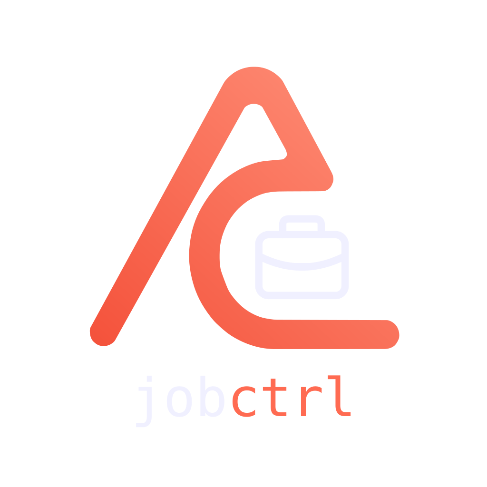
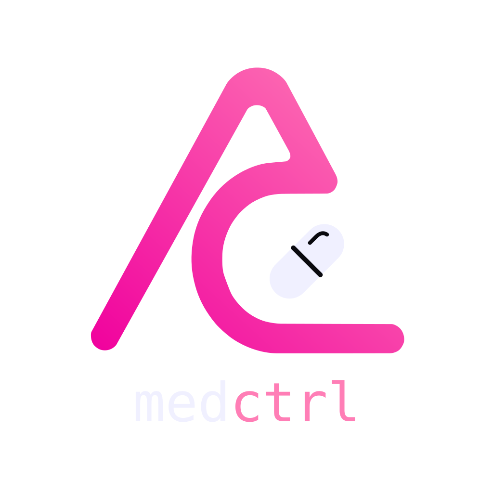
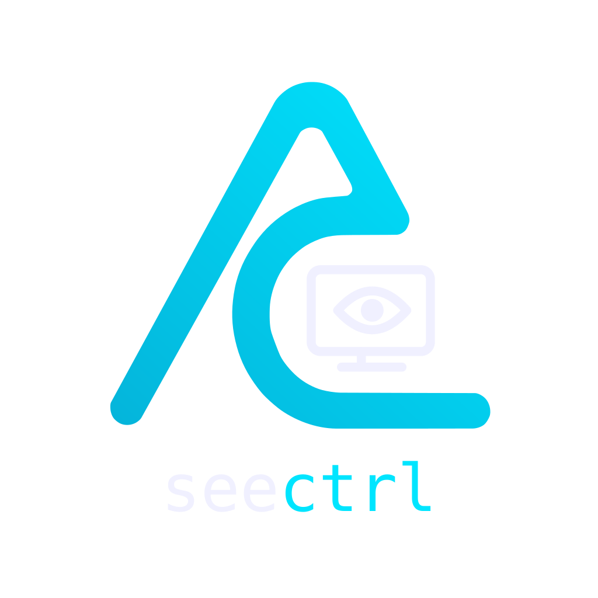
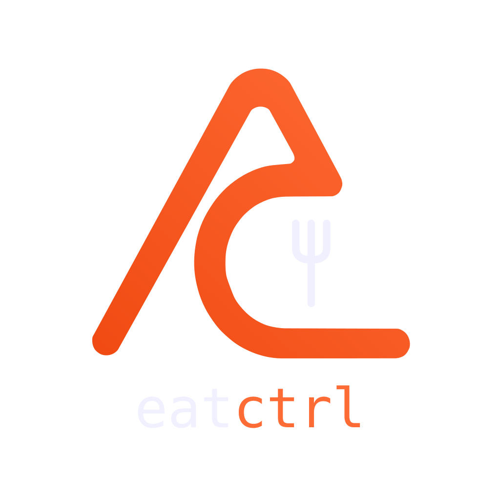
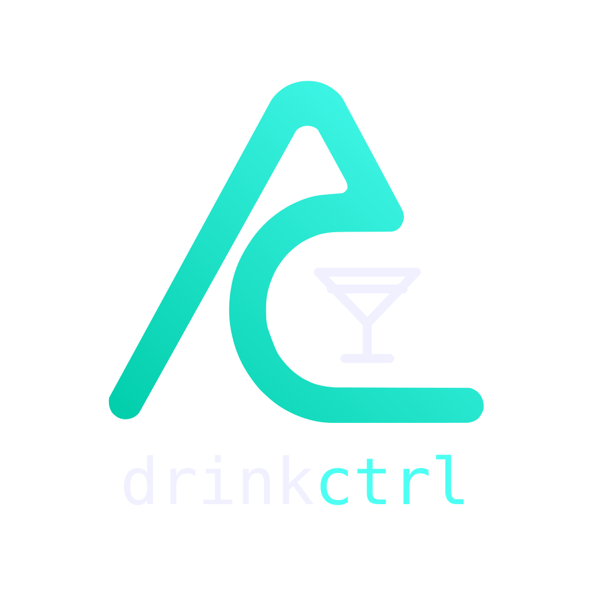
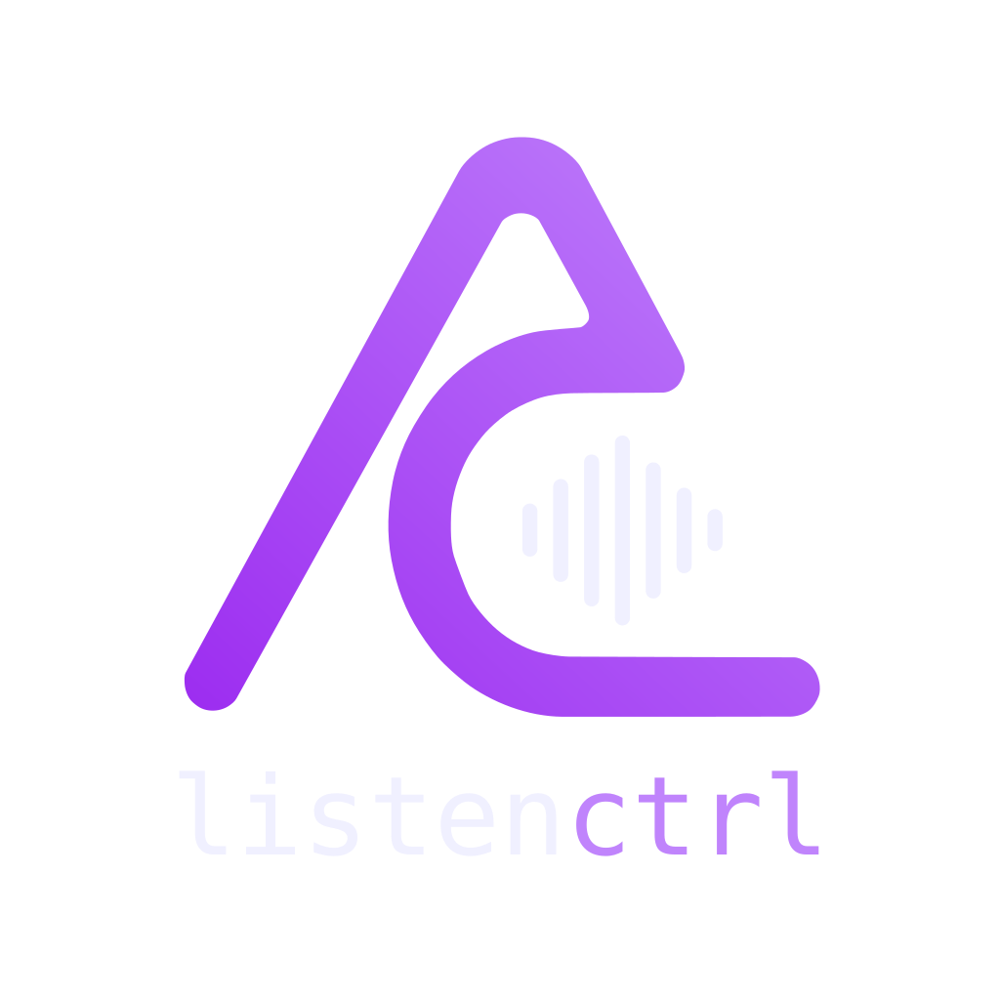
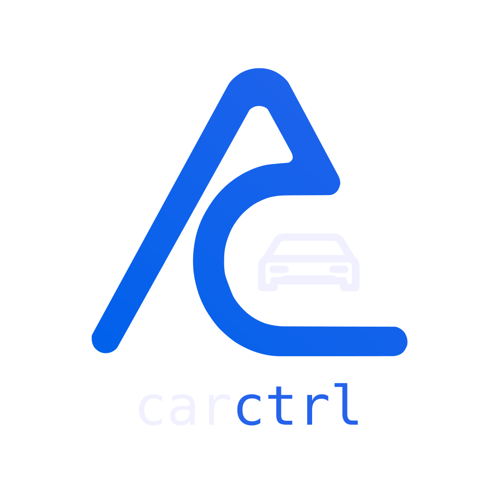

Mer oversikt.
Mer plass til
det du liker.
Tiden din. Interessene dine. Hverdagen din.
allctrl er ideen om små, nyttige verktøy som gir deg oversikt. Hver for seg, og etter hvert sammen.
En hverdag med
mange deler.
Et sted for oversikt.
Hvilken episode var du på? Hvor gikk arbeidstiden? Hva gjorde du da surdeigsbrødet ble så godt?
Små ting blir fort spredt mellom apper, lapper og hukommelsen. ctrl-universet tar utgangspunkt i ett enkelt behov. Å finne igjen, følge med og lære av det du gjør.
Hver modul skal løse et tydelig problem. Samme formspråk og samme tanke går igjen, slik at det føles kjent å ta i bruk den neste.
Finn din del av universet.
Fra arbeidstid til gode opplevelser. Her er modulene og ideene vi bygger videre på.
timectrl
Mindre tid på å føre tid.

jobctrl
Oversikt i neste kapittel.

medctrl
En enklere helsehverdag.

seectrl
Hvor var du igjen?
readctrl
Neste bok. Hele historien.

eatctrl
Husk det gode måltidet.

drinkctrl
Den smaken vil du huske.

listenctrl
Hold tråden i det du hører.
playctrl
Mer oversikt. Mer spilleglede.

carctrl
Fra vurdering til valg.
sportctrl
Følg det som engasjerer deg.
sourdoughctrl
Godt brød trenger en god hukommelse.
allctrl
Ditt univers. Ett overblikk.
Dette er en presentasjon av universet og produktideene. Funksjonene beskriver retningen for hver modul, og er ikke en oversikt over hva som er ferdig lansert.
Begynn med det du trenger.
Én modul om gangen.
Velg verktøyet som løser et behov du faktisk har. Du trenger ikke hele universet for å få nytte av én del.
Samme familie.
Felles design og tydelig struktur gjør det enklere å finne frem, også når du prøver en ny modul.
Et større overblikk.
På sikt kan allctrl samle trådene på tvers av modulene. En personlig oversikt som vokser med deg.
Fra små verktøy
til et personlig univers.
Ambisjonen er å gi deg mer oversikt over det du velger å bruke tid på. Arbeid, interesser, rutiner og opplevelser kan få hvert sitt gode verktøy, med allctrl som det felles overblikket.
Universet utvikles steg for steg. Erfaringene fra én modul skal gjøre den neste bedre.
Se tanken bak overbyggetHva ville du hatt kontroll på?
Har du innspill, et behov som passer inn, eller lyst til å utforske et samarbeid? Ta kontakt med Johan Jørgen.
jjf@allctrl.no